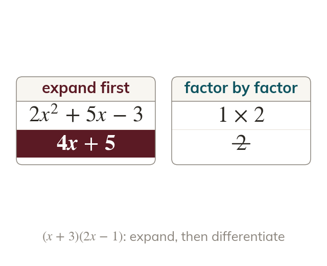
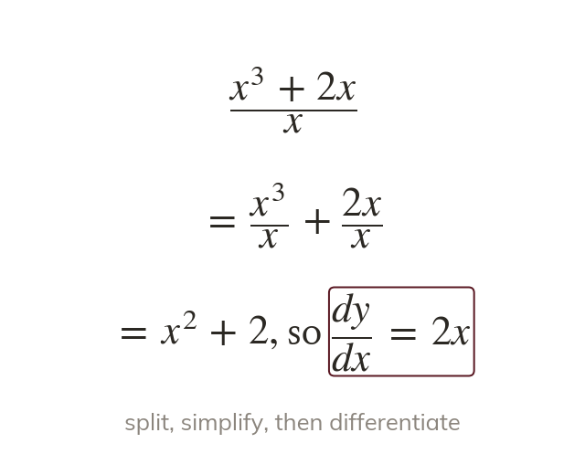
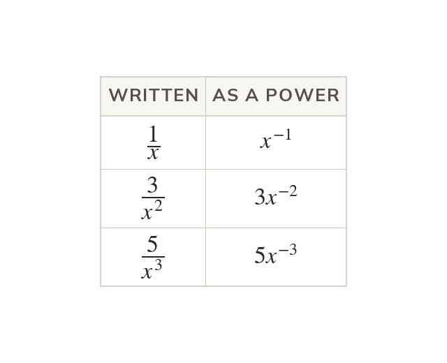
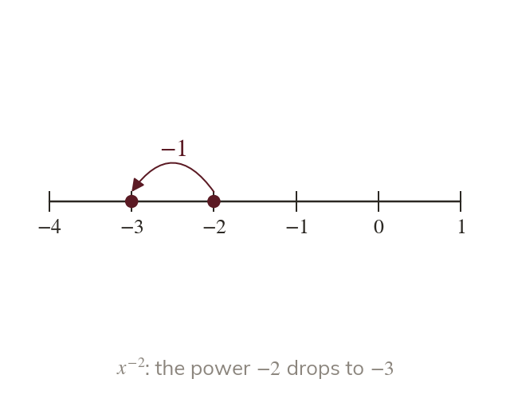

Expand before differentiating
The rule works on single powers of x. So brackets are expanded first.
The rule works on one power of at a time, so a product of brackets is expanded first. becomes which then differentiates to
The rule only works on single powers of x, but real expressions arrive as brackets and fractions. Today we rewrite any expression into powers of x first, including negative powers, so the rule always applies.
Work down the page at your own pace. Write every answer in your book first, then click to check it.
Read each card, then follow the worked examples one step at a time.

The rule works on single powers of x. So brackets are expanded first.

A fraction over a single term splits into separate terms. So becomes
Pick an answer. If it's wrong, the feedback tells you which mistake it was.
Write the blanks in your book first, then tap each one to check.
Read each card, then follow the worked examples one step at a time.

A power underneath becomes a negative power. So is rewritten as first.

The power still comes down and drops by one. So gives which is
Pick an answer. If it's wrong, the feedback tells you which mistake it was.
Write the blanks in your book first, then tap each one to check.
Finished? Next lesson: 11H.7.4 Stationary Points and Increasing Functions.
For each skill, tap the one that is true for you today. Your Revise pages start with anything you mark Not yet.
Your ratings are saved on this device only.
Log in, then search for a code to practise that skill.
Videos, worksheets and more on each part of this lesson.